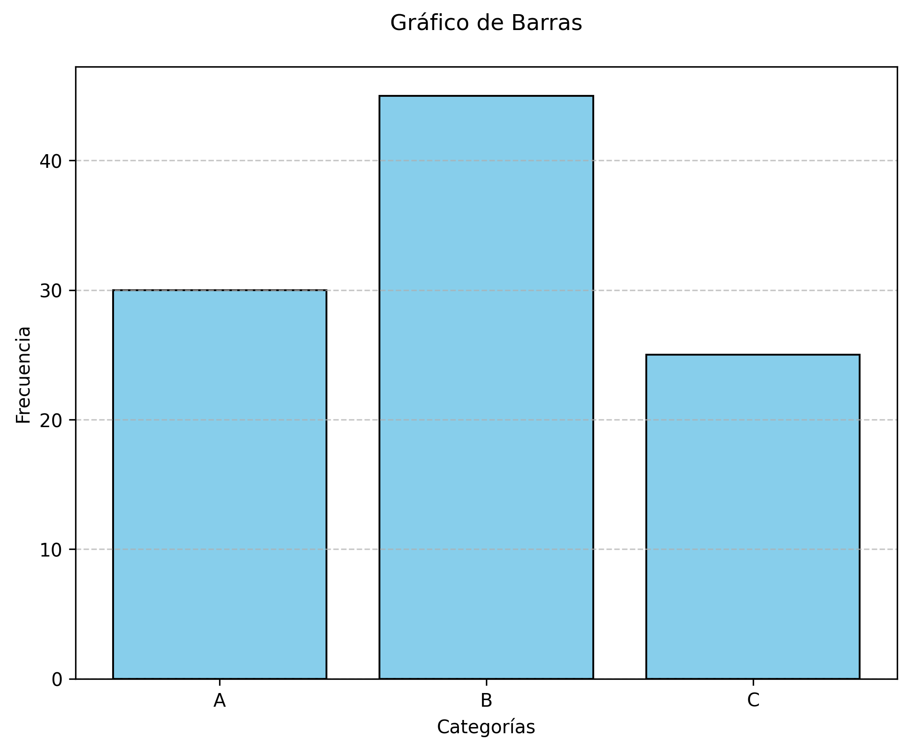
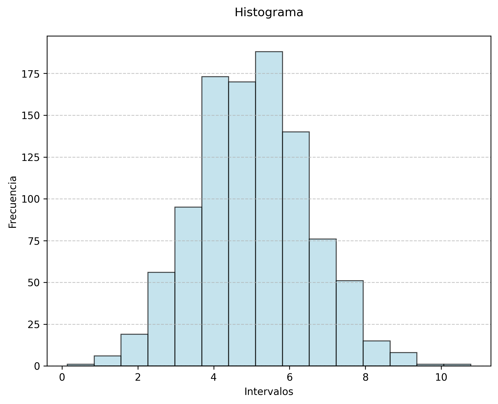
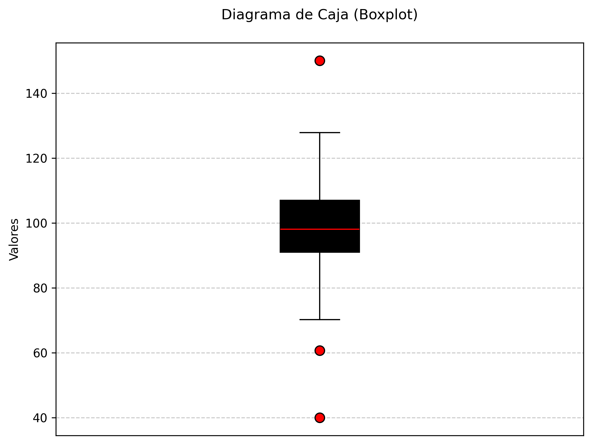
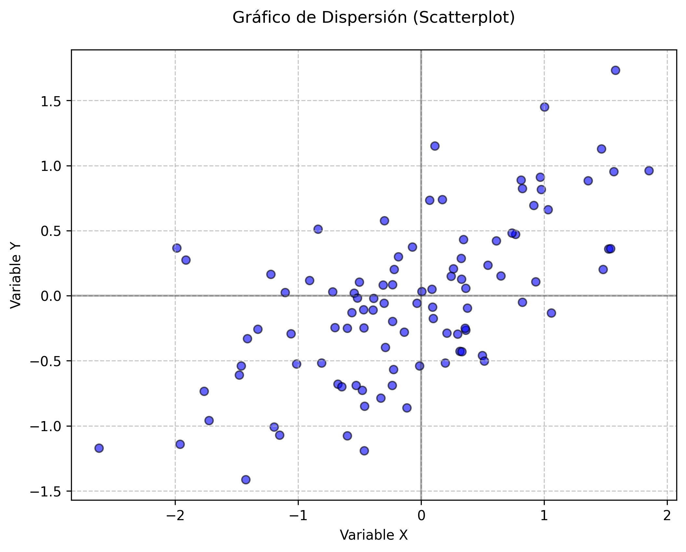
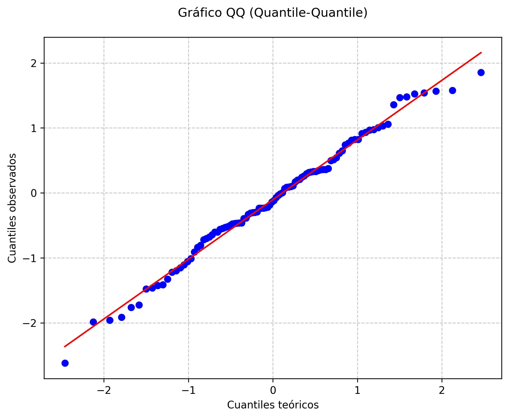
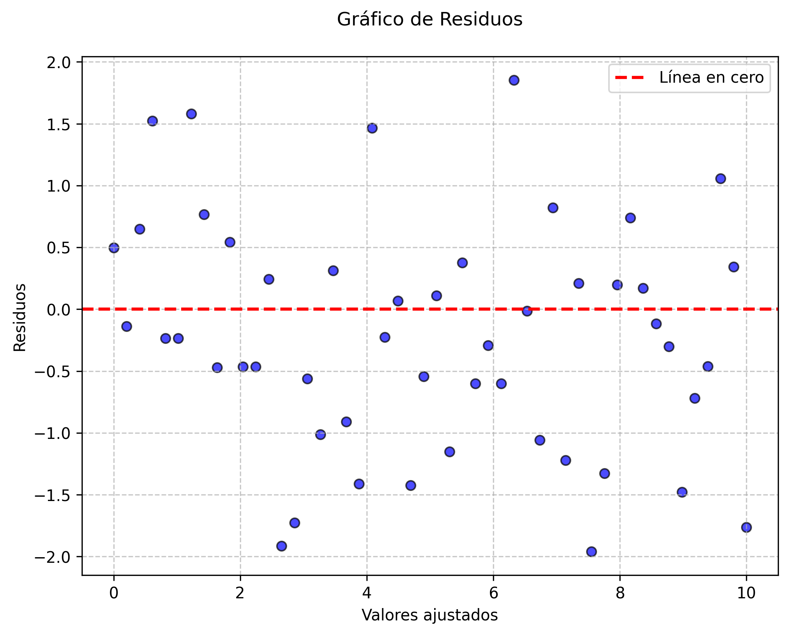

12 Introducción a la visualización de datos
La visualización de datos se define como el proceso de representar información cuantitativa y cualitativa mediante gráficos, diagramas y otras formas visuales. Su objetivo principal es facilitar la comprensión, el análisis y la comunicación de los datos, permitiendo identificar patrones, tendencias, relaciones y anomalías que podrían pasar desapercibidas en tablas numéricas o descripciones textuales. En el contexto del análisis estadístico, la visualización es una herramienta esencial tanto en la fase exploratoria como en la presentación de resultados, ya que ayuda a validar supuestos, comunicar hallazgos y respaldar la toma de decisiones informadas (Wickham, 2016).
La importancia de la visualización radica en su capacidad para transformar datos complejos en representaciones accesibles y comprensibles, promoviendo la transparencia y la reproducibilidad en la investigación científica. Además, los gráficos permiten detectar errores en los datos, identificar valores atípicos y comprender la distribución de las variables antes de aplicar técnicas estadísticas formales (Tufte, 2001).
12.1 Historia y evolución de la visualización en estadística
La visualización de datos tiene una larga tradición en la historia de la estadística. Sus orígenes se remontan al siglo XVIII, cuando se comenzaron a utilizar gráficos para representar información demográfica y económica. Uno de los hitos más importantes fue la invención del gráfico de barras por William Playfair en 1786, quien también introdujo el gráfico de líneas y el gráfico circular. Posteriormente, Florence Nightingale empleó diagramas de área para comunicar la mortalidad en hospitales militares, demostrando el poder de los gráficos para influir en la opinión pública y en la toma de decisiones políticas (Friendly, 2008).
A lo largo del siglo XX, la visualización se consolidó como una disciplina fundamental en la estadística, especialmente con el desarrollo de la computación y el software estadístico, que permitieron la creación de gráficos más complejos y personalizados. En la actualidad, la visualización de datos es un componente central en el análisis exploratorio de datos (EDA) y en la comunicación científica, siendo reconocida como una herramienta indispensable para el trabajo estadístico (Wickham, 2016).
12.2 Principios básicos de la visualización efectiva
La visualización efectiva de datos es un componente esencial para asegurar que la información transmitida sea comprensible, precisa y útil en la toma de decisiones estadísticas. Para lograr este objetivo, es fundamental considerar tres principios clave: claridad, precisión y eficiencia. Estos principios han sido ampliamente discutidos en la literatura especializada, destacando su relevancia en la comunicación gráfica de datos (Tufte, 2001; Cleveland, 1993).
12.2.1 Claridad
La claridad en la visualización implica que el gráfico sea comprensible y transmita el mensaje principal de manera directa, sin ambigüedades ni elementos distractores. Para lograr claridad, se deben considerar los siguientes aspectos (Tufte, 2001):
Eliminar elementos decorativos innecesarios, como fondos llamativos, sombras o efectos tridimensionales que no aportan información relevante.
Utilizar títulos descriptivos y etiquetas claras en los ejes, de modo que el lector comprenda de inmediato qué variables se están representando.
Incluir leyendas explicativas cuando se utilicen colores, símbolos o líneas para diferenciar grupos o categorías.
Mantener un diseño limpio y ordenado, evitando la sobrecarga visual y el uso excesivo de colores o tipografías.
Presentar la información de manera secuencial y lógica, facilitando la interpretación del gráfico desde el primer vistazo.
12.2.2 Precisión
La precisión se refiere a la representación fiel y exacta de los datos, evitando distorsiones que puedan inducir a interpretaciones erróneas. Para asegurar la precisión en los gráficos, se recomienda (Cleveland, 1993):
Utilizar escalas proporcionales y adecuadas al rango de los datos, evitando truncar ejes o manipular escalas que alteren la percepción de las diferencias o relaciones.
Representar todos los datos relevantes, sin omitir valores atípicos o subconjuntos importantes que puedan influir en la interpretación.
Seleccionar el tipo de gráfico adecuado para el tipo de variable y el objetivo del análisis, por ejemplo, no usar gráficos de barras para variables continuas.
Evitar la exageración visual de diferencias mediante el uso de áreas, volúmenes o efectos visuales que no correspondan a la magnitud real de los datos.
Revisar cuidadosamente los datos y la codificación del gráfico para prevenir errores de transcripción o interpretación.
12.2.3 Eficiencia
La eficiencia en la visualización implica transmitir la mayor cantidad de información relevante con el menor esfuerzo cognitivo posible para el usuario. Para lograr eficiencia, se deben seguir estas recomendacionesndefined(Tufte, 2001; Cleveland, 1993):
Resumir la información de manera que el gráfico muestre los aspectos más importantes sin saturar de detalles innecesarios.
Utilizar gráficos sintéticos, como diagramas de caja o gráficos de dispersión, que permiten visualizar múltiples características de los datos en una sola imagen.
Priorizar la información relevante para el objetivo del análisis, evitando la inclusión de variables o elementos que no aportan al mensaje principal.
Facilitar la comparación entre grupos o categorías mediante el uso de colores, formas o posiciones consistentes y fácilmente distinguibles.
Optimizar el tamaño y la resolución del gráfico para que sea legible tanto en pantalla como en impresiones.
12.2.4 Errores comunes a evitar en la visualización de datos
Existen errores frecuentes que pueden comprometer la efectividad de una visualización. Entre los más relevantes se encuentran (Tufte, 2001; Cleveland, 1993):
Uso excesivo de colores, degradados o efectos visuales que dificultan la interpretación y distraen del mensaje principal.
Omitir etiquetas, títulos o leyendas, lo que genera confusión sobre el significado de los elementos representados.
Elegir un tipo de gráfico inadecuado para el tipo de datos, como utilizar gráficos circulares para comparar muchas categorías o gráficos de líneas para variables categóricas.
Manipular escalas de los ejes para exagerar o minimizar diferencias, lo que puede inducir a conclusiones erróneas.
Presentar demasiada información en un solo gráfico, lo que sobrecarga al usuario y dificulta la extracción de conclusiones claras.
12.2.5 Recomendaciones para una visualización efectiva
Para garantizar la integridad y la transparencia en la presentación de los datos, se recomienda (Tufte, 2001; Cleveland, 1993):
Seleccionar el tipo de gráfico más adecuado según el objetivo del análisis y la naturaleza de las variables.
Mantener un diseño simple, claro y directo, priorizando la comprensión del mensaje principal.
Revisar y validar los gráficos antes de su presentación, asegurando que representen fielmente los datos y sean interpretables por el público objetivo.
Utilizar recursos visuales (colores, formas, tamaños) de manera coherente y justificada, evitando la sobrecarga visual.
Documentar las decisiones tomadas en la construcción del gráfico, facilitando la reproducibilidad y la transparencia en el análisis.
12.3 Tipos de gráficos y su utilidad en estadística clásica
En la estadística clásica, la selección adecuada del tipo de gráfico es fundamental para explorar los datos, validar supuestos y comunicar resultados de manera efectiva. A continuación, se describen los principales tipos de gráficos utilizados, sus características y su utilidad específica en el análisis estadístico, siguiendo las recomendaciones de la literatura especializada (Venables & Ripley, 2002; Cleveland, 1993).
12.3.1 Gráficos de barras
Los gráficos de barras permiten comparar frecuencias o proporciones entre categorías de una variable cualitativa. Cada barra representa una categoría y su altura es proporcional a la frecuencia o porcentaje correspondiente. Este tipo de gráfico facilita la identificación de categorías dominantes o poco representadas y es especialmente útil en el análisis de variables como sexo, grupo de tratamiento o respuestas dicotómicas. Además, los gráficos de barras ayudan a detectar patrones de distribución y posibles sesgos en la recolección de datos (Cleveland, 1993).

12.3.2 Histogramas
El histograma es la herramienta principal para visualizar la distribución de variables cuantitativas continuas. Agrupa los datos en intervalos y muestra la frecuencia de observaciones en cada uno. Esta representación permite identificar la forma de la distribución, detectar asimetrías, curtosis, valores atípicos y la presencia de múltiples modos. Los histogramas son esenciales para evaluar el supuesto de normalidad, requisito frecuente en pruebas como el ANOVA y la regresión lineal (Venables & Ripley, 2002).

12.3.3 Diagramas de caja (boxplots)
El diagrama de caja, o boxplot, resume la distribución de una variable cuantitativa mostrando la mediana, los cuartiles y los valores extremos. Este gráfico facilita la comparación entre grupos y la identificación de valores atípicos. Además, permite evaluar la homogeneidad de la varianza, aspecto crucial en el análisis de varianza. Su interpretación sencilla y su capacidad para sintetizar información lo convierten en una herramienta indispensable en la estadística descriptiva y comparativa (Cleveland, 1993).

12.3.4 Gráficos de dispersión (scatterplots)
Los gráficos de dispersión se utilizan para analizar la relación entre dos variables cuantitativas. Cada punto representa una observación y su posición refleja los valores de ambas variables. Este tipo de gráfico permite identificar patrones de asociación, linealidad, presencia de valores atípicos y posibles agrupamientos. Además, es fundamental para explorar la existencia de correlaciones y para evaluar el supuesto de linealidad en modelos de regresión (Venables & Ripley, 2002).

12.3.5 Gráficos QQ (quantile-quantile)
El gráfico QQ compara la distribución de los datos observados con una distribución teórica, generalmente la normal. Si los puntos del gráfico se alinean sobre la diagonal, se puede concluir que los datos siguen la distribución teórica. Este gráfico es esencial para evaluar el supuesto de normalidad en pruebas paramétricas y para detectar desviaciones sistemáticas, colas pesadas o asimetrías en la distribución de los datos (Cleveland, 1993).

12.3.6 Gráficos de residuos
Los gráficos de residuos muestran la diferencia entre los valores observados y los valores ajustados por un modelo estadístico. Un patrón aleatorio en estos gráficos indica que el modelo es adecuado, mientras que la presencia de patrones sistemáticos sugiere problemas de especificación, heterocedasticidad o autocorrelación. Estos gráficos son fundamentales en la validación de modelos de regresión y en la toma de decisiones sobre la necesidad de transformar variables o ajustar el modelo (Venables & Ripley, 2002).
